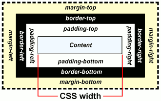

What is the difference between padding, border, and margin?
These are three options that directly interact with one another and the content. It is best to understand these different elements by utilizing the imagery that shows eaches circle of influence.
As you can see in the image above, padding is the space between you content and the border and is best used in creating space around your content, especially within the border. The border is good for differentiating separate elements and even within an element. It can be used to make tables or buttons for your site and just creating differentiation between the different spaces on your site. Margin is space around the border and is great for creating space between elements, as well as assisting with position around the page. In positioning you can also use negative numbers to move your content in the opposite direction. Having the image with color coded outlines in Chrome DevTools really help to utilize padding, borders, and margin and see how your design is changing as you change the options. It also helps to see which is probably your best bet to change in order to have the desired effect.